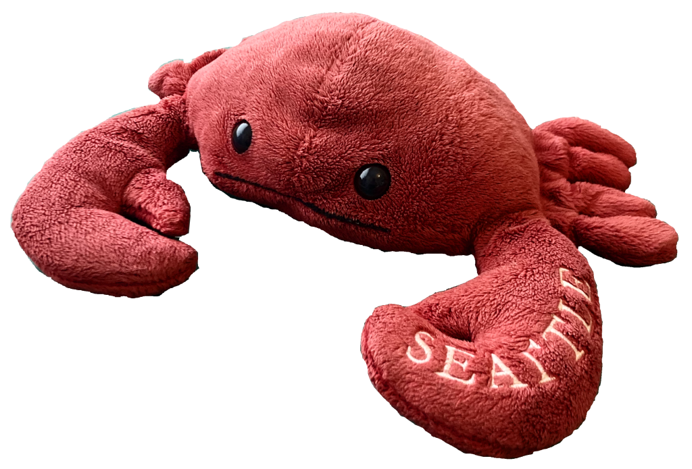

Crabby
Hey, that's me
Hey, that's me
Crabby's best friend and a Star Wars porg, Porgi is known for being incredibly lazy and can usually be found snoozing away.
Despite their laziness, Porgi's energy spikes when it's time to dance, showcasing impressive moves that never fail to entertain Crabby and the gang.
The epitome of cuteness, Mimi looks up to Rachel as a role model, particularly admiring her impeccable makeup skills.
Serving as a nurturing figure within the gang, Mimi excels in her role as Crabby's trusty Appa, offering comfort and support whenever needed.
A playful penguin with a penchant for snoozing and sliding, Pin Pin adds a dynamic element to the gang.
While generally amiable, Pin Pin has a unique way of maintaining order – Crabby quickly learned that being nice is the key to avoiding becoming Pin Pin's snack!
The newest addition to the gang, Garry brings a fresh perspective and excitement to their adventures.
Garry doesn't have much to say and just likes to follow Crabby!